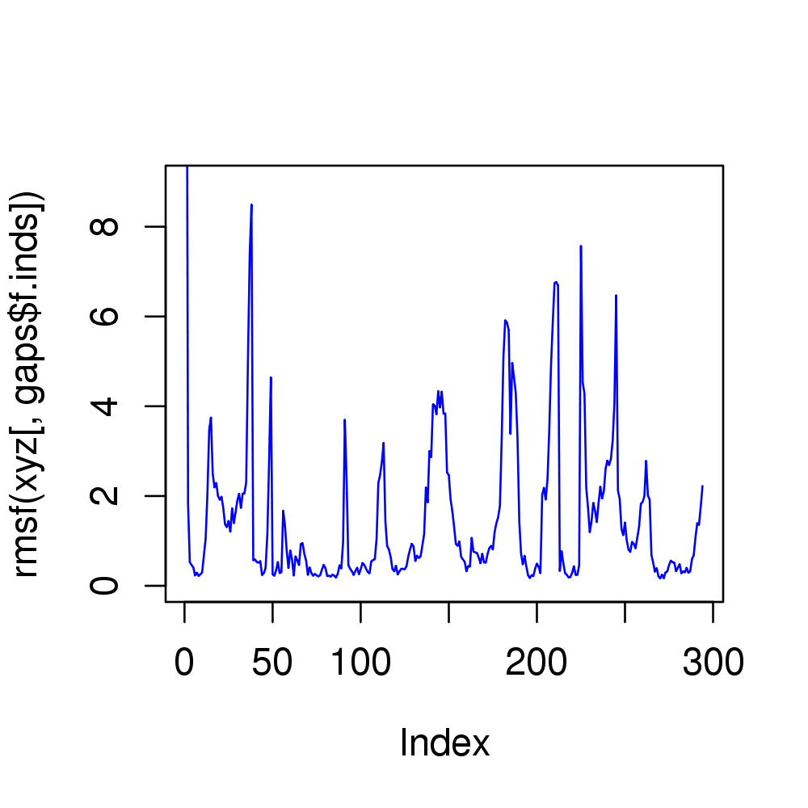
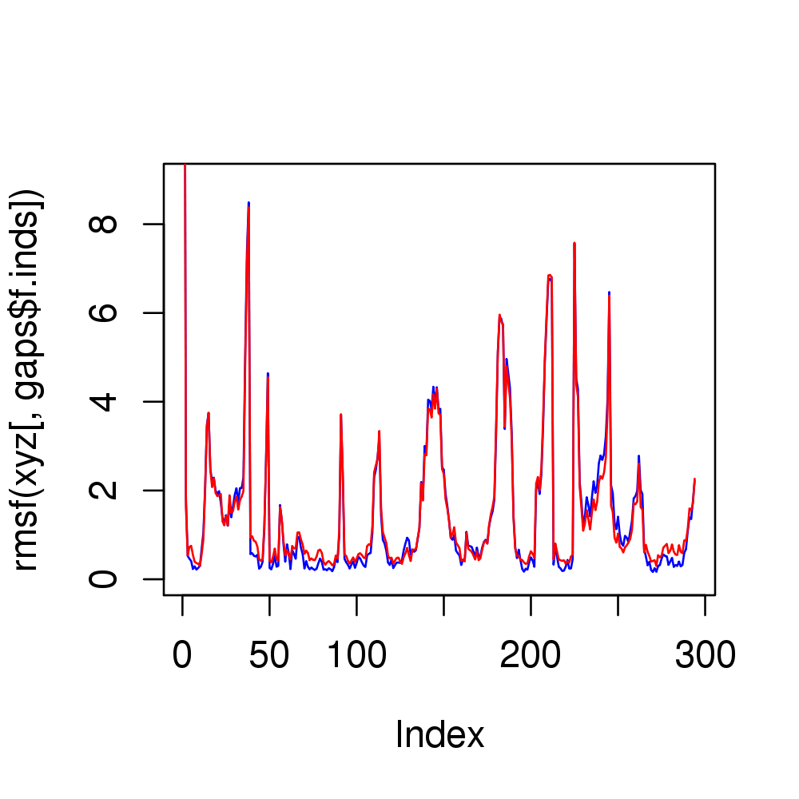

Plot Core Fitting Progress
Usage
plot(x, y = NULL, type = "h", main = "", sub = "", xlim = NULL, ylim = NULL, xlab = "Core Size (Number of Residues)",
ylab = "Total Ellipsoid Volume (Angstrom^3)", axes = TRUE, ann = par("ann"),
col = par("col"), ...)
Arguments
- x
- a list object obtained with the function
core.findfrom which the ‘volume’ component is taken as the x coordinates for the plot. - y
- the y coordinates for the plot.
- type
- one-character string giving the type of plot desired.
- main
- a main title for the plot, see also ‘title’.
- sub
- a sub-title for the plot.
- xlim
- the x limits of the plot.
- ylim
- the y limits of the plot.
- xlab
- a label for the x axis.
- ylab
- a label for the y axis.
- axes
- a logical value indicating whether both axes should be drawn.
- ann
- a logical value indicating whether the default annotation (title and x and y axis labels) should appear on the plot.
- col
- The colors for lines and points. Multiple colours can be specified so that each point is given its own color. If there are fewer colors than points they are recycled in the standard fashion.
- ...
- extra plotting arguments.
Description
Plots the total ellipsoid volume of core positions versus core size at each iteration of the core finding process.
Value
Called for its effect.
References
Grant, B.J. et al. (2006) Bioinformatics 22, 2695--2696.
Note
The produced plot can be useful for deciding on the core/non-core boundary.
Examples
##-- Generate a small kinesin alignment and read corresponding structures pdbfiles <- get.pdb(c("1bg2","2ncd","1i6i","1i5s"), URLonly=TRUE) pdbs <- pdbaln(pdbfiles)Reading PDB files: http://www.rcsb.org/pdb/files/1bg2.pdb http://www.rcsb.org/pdb/files/2ncd.pdb http://www.rcsb.org/pdb/files/1i6i.pdb http://www.rcsb.org/pdb/files/1i5s.pdb HEADER MOTOR PROTEIN 04-JUN-98 1BG2 . HEADER CONTRACTILE PROTEIN 04-JUN-99 2NCD . HEADER TRANSPORT PROTEIN 02-MAR-01 1I6I PDB has ALT records, taking A only, rm.alt=TRUE . HEADER TRANSPORT PROTEIN 28-FEB-01 1I5S PDB has ALT records, taking A only, rm.alt=TRUE . Extracting sequences muscle -in /tmp/RtmpyefGEQ/filec177354acd5a -out aln.fa -quiet -seqtype protein pdb/seq: 1 name: http://www.rcsb.org/pdb/files/1bg2.pdb pdb/seq: 2 name: http://www.rcsb.org/pdb/files/2ncd.pdb pdb/seq: 3 name: http://www.rcsb.org/pdb/files/1i6i.pdb PDB has ALT records, taking A only, rm.alt=TRUE pdb/seq: 4 name: http://www.rcsb.org/pdb/files/1i5s.pdb PDB has ALT records, taking A only, rm.alt=TRUE##-- Find 'core' positions core <- core.find(pdbs)core size 293 of 294 vol = 699.925 core size 292 of 294 vol = 596.377 core size 291 of 294 vol = 526.367 core size 290 of 294 vol = 461.809 core size 289 of 294 vol = 398.743 core size 288 of 294 vol = 338.511 core size 287 of 294 vol = 284.55 core size 286 of 294 vol = 245.99 core size 285 of 294 vol = 209.855 core size 284 of 294 vol = 181.912 core size 283 of 294 vol = 174.392 core size 282 of 294 vol = 164.476 core size 281 of 294 vol = 156.414 core size 280 of 294 vol = 146.519 core size 279 of 294 vol = 138.917 core size 278 of 294 vol = 130.52 core size 277 of 294 vol = 123.34 core size 276 of 294 vol = 118.842 core size 275 of 294 vol = 113.597 core size 274 of 294 vol = 107.865 core size 273 of 294 vol = 103.215 core size 272 of 294 vol = 97.239 core size 271 of 294 vol = 92.829 core size 270 of 294 vol = 87.717 core size 269 of 294 vol = 84.086 core size 268 of 294 vol = 80.571 core size 267 of 294 vol = 77.329 core size 266 of 294 vol = 75.464 core size 265 of 294 vol = 72.27 core size 264 of 294 vol = 70.298 core size 263 of 294 vol = 67.809 core size 262 of 294 vol = 64.211 core size 261 of 294 vol = 61.395 core size 260 of 294 vol = 59.047 core size 259 of 294 vol = 57.234 core size 258 of 294 vol = 55.442 core size 257 of 294 vol = 53.374 core size 256 of 294 vol = 50.983 core size 255 of 294 vol = 48.827 core size 254 of 294 vol = 47.141 core size 253 of 294 vol = 45.141 core size 252 of 294 vol = 43.701 core size 251 of 294 vol = 43.009 core size 250 of 294 vol = 42.575 core size 249 of 294 vol = 40.857 core size 248 of 294 vol = 39.521 core size 247 of 294 vol = 38.055 core size 246 of 294 vol = 36.383 core size 245 of 294 vol = 34.777 core size 244 of 294 vol = 33.234 core size 243 of 294 vol = 31.942 core size 242 of 294 vol = 30.77 core size 241 of 294 vol = 29.364 core size 240 of 294 vol = 28.579 core size 239 of 294 vol = 27.857 core size 238 of 294 vol = 26.662 core size 237 of 294 vol = 25.791 core size 236 of 294 vol = 25.126 core size 235 of 294 vol = 24.758 core size 234 of 294 vol = 24.072 core size 233 of 294 vol = 22.984 core size 232 of 294 vol = 22.483 core size 231 of 294 vol = 21.414 core size 230 of 294 vol = 20.533 core size 229 of 294 vol = 19.881 core size 228 of 294 vol = 19.328 core size 227 of 294 vol = 18.594 core size 226 of 294 vol = 17.918 core size 225 of 294 vol = 17.824 core size 224 of 294 vol = 17.519 core size 223 of 294 vol = 16.291 core size 222 of 294 vol = 15.704 core size 221 of 294 vol = 15.036 core size 220 of 294 vol = 14.852 core size 219 of 294 vol = 14.298 core size 218 of 294 vol = 13.536 core size 217 of 294 vol = 12.802 core size 216 of 294 vol = 12.249 core size 215 of 294 vol = 11.663 core size 214 of 294 vol = 11.121 core size 213 of 294 vol = 10.52 core size 212 of 294 vol = 10.379 core size 211 of 294 vol = 10.062 core size 210 of 294 vol = 9.795 core size 209 of 294 vol = 9.539 core size 208 of 294 vol = 9.176 core size 207 of 294 vol = 9.299 core size 206 of 294 vol = 8.77 core size 205 of 294 vol = 8.437 core size 204 of 294 vol = 8.153 core size 203 of 294 vol = 7.771 core size 202 of 294 vol = 7.517 core size 201 of 294 vol = 7.312 core size 200 of 294 vol = 7.091 core size 199 of 294 vol = 6.829 core size 198 of 294 vol = 6.458 core size 197 of 294 vol = 6.261 core size 196 of 294 vol = 6.101 core size 195 of 294 vol = 5.734 core size 194 of 294 vol = 5.563 core size 193 of 294 vol = 5.372 core size 192 of 294 vol = 5.228 core size 191 of 294 vol = 5.153 core size 190 of 294 vol = 5.03 core size 189 of 294 vol = 4.917 core size 188 of 294 vol = 4.85 core size 187 of 294 vol = 4.744 core size 186 of 294 vol = 4.613 core size 185 of 294 vol = 4.478 core size 184 of 294 vol = 4.39 core size 183 of 294 vol = 4.275 core size 182 of 294 vol = 4.149 core size 181 of 294 vol = 4.034 core size 180 of 294 vol = 3.944 core size 179 of 294 vol = 3.876 core size 178 of 294 vol = 3.753 core size 177 of 294 vol = 3.753 core size 176 of 294 vol = 3.621 core size 175 of 294 vol = 3.457 core size 174 of 294 vol = 3.349 core size 173 of 294 vol = 3.119 core size 172 of 294 vol = 2.994 core size 171 of 294 vol = 2.875 core size 170 of 294 vol = 2.736 core size 169 of 294 vol = 2.681 core size 168 of 294 vol = 2.591 core size 167 of 294 vol = 2.535 core size 166 of 294 vol = 2.475 core size 165 of 294 vol = 2.43 core size 164 of 294 vol = 2.383 core size 163 of 294 vol = 2.351 core size 162 of 294 vol = 2.193 core size 161 of 294 vol = 2.134 core size 160 of 294 vol = 2.086 core size 159 of 294 vol = 2.042 core size 158 of 294 vol = 1.952 core size 157 of 294 vol = 1.908 core size 156 of 294 vol = 1.854 core size 155 of 294 vol = 1.814 core size 154 of 294 vol = 1.761 core size 153 of 294 vol = 1.729 core size 152 of 294 vol = 1.672 core size 151 of 294 vol = 1.631 core size 150 of 294 vol = 1.589 core size 149 of 294 vol = 1.537 core size 148 of 294 vol = 1.509 core size 147 of 294 vol = 1.496 core size 146 of 294 vol = 1.474 core size 145 of 294 vol = 1.449 core size 144 of 294 vol = 1.365 core size 143 of 294 vol = 1.33 core size 142 of 294 vol = 1.303 core size 141 of 294 vol = 1.268 core size 140 of 294 vol = 1.268 core size 139 of 294 vol = 1.24 core size 138 of 294 vol = 1.231 core size 137 of 294 vol = 1.214 core size 136 of 294 vol = 1.119 core size 135 of 294 vol = 1.112 core size 134 of 294 vol = 1.102 core size 133 of 294 vol = 1.078 core size 132 of 294 vol = 1.043 core size 131 of 294 vol = 1.018 core size 130 of 294 vol = 0.969 core size 129 of 294 vol = 0.938 core size 128 of 294 vol = 0.93 core size 127 of 294 vol = 0.903 core size 126 of 294 vol = 0.882 core size 125 of 294 vol = 0.873 core size 124 of 294 vol = 0.86 core size 123 of 294 vol = 0.851 core size 122 of 294 vol = 0.833 core size 121 of 294 vol = 0.824 core size 120 of 294 vol = 0.803 core size 119 of 294 vol = 0.78 core size 118 of 294 vol = 0.756 core size 117 of 294 vol = 0.763 core size 116 of 294 vol = 0.712 core size 115 of 294 vol = 0.704 core size 114 of 294 vol = 0.697 core size 113 of 294 vol = 0.665 core size 112 of 294 vol = 0.656 core size 111 of 294 vol = 0.64 core size 110 of 294 vol = 0.632 core size 109 of 294 vol = 0.608 core size 108 of 294 vol = 0.594 core size 107 of 294 vol = 0.584 core size 106 of 294 vol = 0.528 core size 105 of 294 vol = 0.526 core size 104 of 294 vol = 0.516 core size 103 of 294 vol = 0.534 core size 102 of 294 vol = 0.517 core size 101 of 294 vol = 0.485 FINISHED: Min vol ( 0.5 ) reachedplot(core)
##-- Fit on these relatively invarient subset of positions core.inds <- print(core)# 131 positions (cumulative volume <= 1 Angstrom^3) start end length 1 9 16 8 2 34 34 1 3 36 36 1 4 38 38 1 5 48 49 2 6 51 53 3 7 57 62 6 8 67 67 1 9 69 70 2 10 72 74 3 11 78 95 18 12 97 97 1 13 104 104 1 14 106 119 14 15 129 137 9 16 139 139 1 17 142 142 1 18 144 145 2 19 166 166 1 20 168 173 6 21 175 175 1 22 179 179 1 23 181 181 1 24 183 183 1 25 203 210 8 26 212 213 2 27 225 236 12 28 283 284 2 29 287 287 1 30 294 294 1 31 296 304 9 32 306 306 1 33 308 313 6 34 315 316 2 35 318 318 1xyz <- pdbfit(pdbs, core.inds, outpath="corefit_structures")HEADER MOTOR PROTEIN 04-JUN-98 1BG2 HEADER CONTRACTILE PROTEIN 04-JUN-99 2NCD HEADER TRANSPORT PROTEIN 02-MAR-01 1I6I PDB has ALT records, taking A only, rm.alt=TRUE HEADER TRANSPORT PROTEIN 28-FEB-01 1I5S PDB has ALT records, taking A only, rm.alt=TRUE##-- Compare to fitting on all equivalent positions xyz2 <- pdbfit(pdbs) ## Note that overall RMSD will be higher but RMSF will ## be lower in core regions, which may equate to a ## 'better fit' for certain applications gaps <- gap.inspect(pdbs$xyz) rmsd(xyz[,gaps$f.inds])[,1] [,2] [,3] [,4] [1,] 0.000 3.581 3.362 3.105 [2,] 3.581 0.000 3.772 3.593 [3,] 3.362 3.772 0.000 2.338 [4,] 3.105 3.593 2.338 0.000rmsd(xyz2[,gaps$f.inds])[,1] [,2] [,3] [,4] [1,] 0.000 3.570 3.297 3.089 [2,] 3.570 0.000 3.696 3.579 [3,] 3.297 3.696 0.000 2.222 [4,] 3.089 3.579 2.222 0.000plot(rmsf(xyz[,gaps$f.inds]), typ="l", col="blue", ylim=c(0,9))
points(rmsf(xyz2[,gaps$f.inds]), typ="l", col="red")